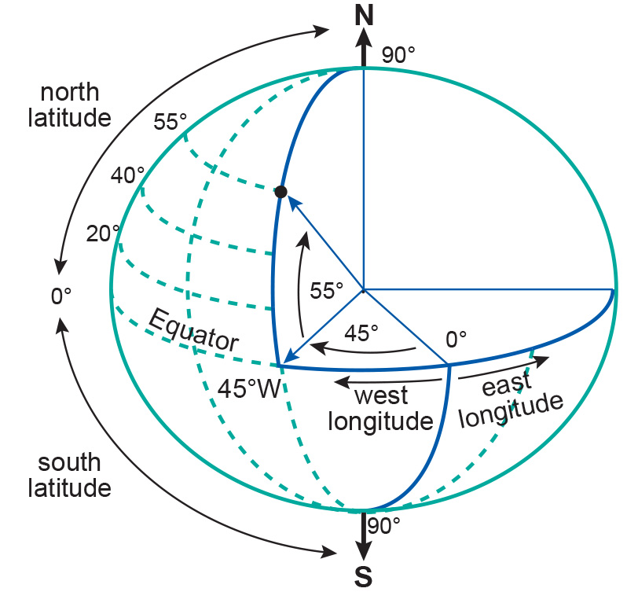
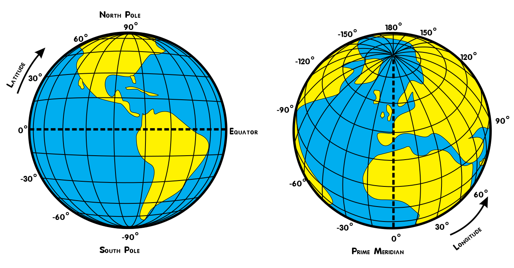
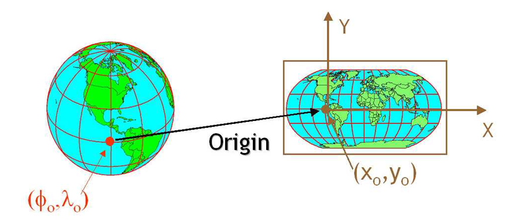

12 Coordinate Reference Systems
In this section we review what is a Coordinate Reference System (CRS).
12.1 What is a CRS?
Since the Earth does not comme with lines and numbers etched on it, us humans need to create a system to locate places on it. A way to solve this is to use a coordinate reference system (CRS). A CRS is, at its core, a way to represent places on the Earth as coordinates.
To understand what are the components of a CRS it can be useful to think of the process we would undergo to match places on the Earth to numbers (coordinates) that represent them.
12.1.1 1. Ellipsoid: Pick a shape for the Earth
Start with the Earth. Our planet is not a perfect sphere. Apart from its rugged surface with high mountains and deep ocean trenches, the shape of the Earth is not round. Due to the Earth’s rotation, the planet is slightly wider at the Equator. Thus, a sphere is not the best way to model the shape of the Earth. Instead, we use an ellipsoid. Think of an ellipsoid as a sphere that has been flattened a bit, thus making it wider across one axis. This is the first step for creating a CRS: picking an ellipsoid, a.k.a picking a shape for the Earth. The ellipsoid used to represent the Earth’s shape has changed across time and it also changes by application.
12.1.2 2. Datum: Align the ellipsoid with Earth’s locations
The ellipsoid is an abstract mathematical object on which we can locate points on it by using angles. The coordinate system on the ellipsoid is (angles from x, angles form y).

The next step is thus to make a decision on how to align the ellipsoid so that it’s surface corresponds to actual places on the Earth. We could think, for example of how to place the ellipsoid’s center relative to Earth’s mass center (is it the same or is it off?) or how to align the ellipsoid’s axes with the Earth (which meridian will be our prime meridian?). Generally speaking, a geodetic datum, or just datum, is how we are aligning our abstract ellipsoid to match the Earth’s surface.

Geographers and cartographers have created and used many datums across time and applications. Sometimes datum refers both to a choice of ellipsoid and how to align it to the Earth. More importantly, different datums are used to increase the accuracy of representing different regions of Earth. At the GIS wiki you can see a list of names of different datums optimized for different regions.
12.1.3 3. Geographic CRS: Lat/lon coordinates for all the world
At this point, we have successfully made a correspondence between the Earth’s surface of and our ellipsoid. This means we can now use the lat,lon coordinates of the ellipsoid to locate any point on the Earth’s surface. What we have now is a geographic CRS. Geographic coordinate reference systems use degrees of latitude and longitude to locate points on the Earth, still thinking of it as a 3D object.

12.1.4 4. Projection: Flatten a portion of your ellipsoid to make a planar map
A map is a flat (2-dimensional) representation of a region of the Earth. In a geographic CRS we use a 3-dimensional model of the Earth (the ellipsoid) to locate places on it. To transform our 3D ellipsoid to make a 2D representation we need to use a projection. A projection is a method to convert between angular coordinates (i.e. lat, long coordinates in 3D) and planar coordinates (i.e. x, y coordinates in 2D).

There are many ways to project an ellipsoid into a 2-dimensional region. However, no matter what projection we use, the area, distances, or angles of the actual regions on Earth will be distorted when we project. Ultimately, the choice of projection relies on whether we want to optimze calculations involving area, angle, or distance measurements, as well as aesthetics when creating a map.
More about projections:
🎥 Vox - Why all world maps are wrong
📖 QGIS - A gentle introduction to GIS - Coordinate Reference Systems
12.1.5 5. Projected CRS: x,y coordinates for a specific region
When we project a region of the ellipsoid to represent a region of Earth on the plane we obtain a new set of planar coordinates, thus creating a projected CRS. A projected CRS must also include a unit of measure for its axes. These new coordinates are usually called eastings, when referring to the eastward-measured distance (x-coordinate), and northings, when referring to the northward-measured distance (y-coordinate).
